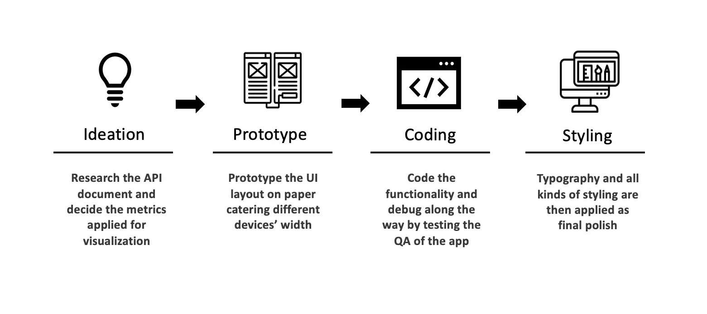

A dynamic seasonal data dashboard of the MLB players designed for baseball and statistics enthusiasts
Web Developer / Designer
Taiwan
HTML, CSS, Ajax , D3.js
2020 / 01 - 2020 / 04
Being a baseball fan for years and with a keen sense to data, I am recently looking into the sites provide MLB data visualization services, looking for opportunities to identify the design issue and rebuild a solution if possible. Some problems identified as being an user to sites like Fangraph and Statcast:
With these issues identified in mind, I was seeking for a solution which is intuitive, simple to use, and offer just enough information for a MLB player's performance status. I decided to build my own solution and hope this product will serve as an alternative solution for any person who is new to baseball and wants to step into the world of baseball data analysis.
* Note : The project purpose is only for personal, non-commercial usage, all the information displayed on the web app are proprietary content of MLB Advanced Media, L.P ("MLBAM").
The process is full of strugglings yet also with lots of fun. I've learned so much on this project of an end-to-end product rollout process from planning, prototyping, developing, to debugging. Furthermore, I also learned how to multi-task under the circumstance where limited resources are available. This also gives me a good opportunity to know how each role function really is based on personal experience, which will help me to communicate better with cross-functional teams next time.
The roles I have to play throughout the process :
1. A designer to design the layout that is responsive to as many devices as possible.
( Though I'll still recommend using laptop for a better experience. )
2. A programmer to code out the functionality and constantly debugging.
3. A QA to test the functionality to find hidden bugs.
4. An analyst to automate metrics calculation and find a logical way to transform raw data into digestible visualization.
The dashboard display a single player's career and seasonal statistics visualization based on users' query action. Note that I've disabled search function for player photo as what the screenshots display due to a potential violation for players' portrait right.
Product UI screenshots
( *Note : The y-axis will adjust the labels based on the maximum filtering metrics. )
Ⓒ Yi-Tsung, Chen 2020. All Rights Reserved - Built from scratch with HTML / CSS / JavaScript